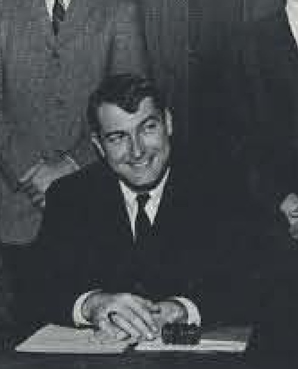
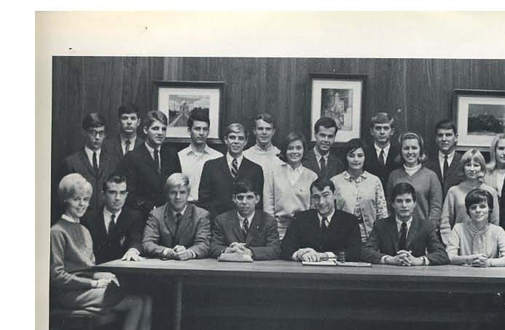

#
President Kelly Thompson approves the constitution
The proposed constitution of the Associated Students of Western Kentucky University was completed in late March and approved on 1 April. The copy held by WKU Archives is dated 7 April 1966.
Associated Students · academic year

First president of the Associated Students of Western Kentucky University, elected 18 May 1966, seven weeks after President Kelly Thompson approved the constitution.
Jim Haynes was one of three candidates, with Leonard Heydt and John Lovett, who presented their views to the Herald in the race for the first presidency of the Associated Students in May 1966, days after the student body ratified the new constitution.
Haynes captured the presidency the following week, becoming the first president of the Associated Students of Western Kentucky University. The same issue carried a skeptical editorial titled 'We Do Not Deserve Student Government,' a measure of the doubts his administration set out to answer.
Haynes's term closed in May 1967, when the Herald summed up the government's first year as one of organization, progress and apathy and carried president-elect William Menser's plans for 1967-68.
Sources for this account
Everything the archive holds on Jim Haynes, gathered on one page.
Everyone the record shows in office this year. Each name goes to their own page, with every office they held and everything the archive says they did.
Listed at the head of the roster of the first Congress of Associated Students, elected May 1966; the roster gives him as a senior from Glasgow.
UA3/3/1 Congress of Associated Students, roster of the first Congress elected May 1966Named second on the roster of the first Congress, a senior from Paducah. The 1967 Talisman's Associated Students group photograph caption gives him as Jim Fox, vice president.
UA3/3/1 Congress of Associated Students, roster of the first Congress elected May 1966A junior from Owensboro. He was the only one of the four founding officers returned to the same office the following year.
UA3/3/1 Congress of Associated Students, roster of the first Congress elected May 1966A junior from Bowling Green on the roster of the first Congress. She stayed in Congress the following year as a Panhellenic Council representative.
UA3/3/1 Congress of Associated Students, roster of the first Congress elected May 1966A senior from Bowling Green whose at-large seat carried Executive Council membership; the 1967 Talisman caption also lists him as a member of the Executive Committee.
UA3/3/1 Congress of Associated Students, roster of the first Congress elected May 1966A senior from Hopkinsville; the roster marks this Interfraternity Council seat as carrying Executive Council membership.
UA3/3/1 Congress of Associated Students, roster of the first Congress elected May 1966The roster marks his seat as carrying membership of the Executive Council, so he sat in the executive as well as in Congress.
UA3/3/1 Congress of Associated Students, roster of the first Congress elected May 1966A junior from Louisville. He was elected vice president of Associated Students for 1967-68.
UA3/3/1 Congress of Associated Students, roster of the first Congress elected May 1966The roster prints the name as Catlette (Tom) Evans, Jr., a junior from Tompkinsville; the 1967-68 roster gives him plainly as Tom Evans.
UA3/3/1 Congress of Associated Students, roster of the first Congress elected May 1966A sophomore from Calvert City; he held a men's residence halls seat again in 1967-68.
UA3/3/1 Congress of Associated Students, roster of the first Congress elected May 1966A senior from Dawson Springs on the first Congress. He was elected president of Associated Students for 1967-68.
UA3/3/1 Congress of Associated Students, roster of the first Congress elected May 1966A junior from Farmington, Michigan; he held a men's residence halls seat again in 1967-68.
UA3/3/1 Congress of Associated Students, roster of the first Congress elected May 1966The 4 things student government staged or ran for the campus this year, drawn from the chronology below. Every one of them also appears on the programmes page, which runs the whole sixty years together.
The proposed constitution of the Associated Students of Western Kentucky University was completed in late March and approved on 1 April. The copy held by WKU Archives is dated 7 April 1966.
The archived copy of Thompson's approval letter names the organizing committee that drafted the constitution: Reed Morgan as chair, John Lovett as vice chair. Morgan's committee did the drafting; Jim Haynes was elected to lead the government it created six weeks later.
UA3/3/1, Letter to Organizational Committee for a Western Student Organization, 1 Apr 1966 PDF
The College Heights Herald of 7 April 1966 printed the constitution of the Associated Students in full, six days after President Kelly Thompson approved it and nineteen days before the ratification vote. It is the copy TopSCHOLAR holds, and the only complete text of the founding framework in the archive.
Constitution of WKU Associated Students, printed in the College Heights Herald, 7 Apr 1966
A four-day referendum. 2,538 students voted - a larger raw turnout than most SGA elections have managed since.
The first Congress of Associated Students was elected in May 1966, per the roster WKU Archives holds as UA3/3/1. The record's online description gives only that fact.
Seven weeks from presidential approval to a seated student president. Western Kentucky State College became Western Kentucky University on 16 June, so the university and its student government are almost exactly the same age.
The Herald's first issue of the fall reported the student senate ratifying a government appointment as the Associated Students began their first full academic year. Students had approved the constitution and elected officers the previous spring.
The first Herald of the Associated Students' first full year carried an article headed "Campus Entertainment Improvements Possible Through State Association," the earliest sign of the block-booking idea that would define the organisation's entertainment work for the next decade.
Midway through the fall semester the Herald judged that Associated Students leaders were performing well but were failing to communicate with the students they represented. It was the first public report card on the year-old government.
The Herald reported Student Government Association leaders meeting with President Kelly Thompson to discuss campus problems, an early instance of the year-old government dealing directly with the administration.
The Herald reported that the month's campus events were being posted outside the Associated Students office. It is the earliest standing service the record shows the new government running for students.
A week before the presidential campaign opened, the Herald ran a piece by Fran Salyers arguing that popularity, not merit, was set to decide the Associated Students election.
The Herald reported two candidates seeking the Associated Students presidency, with campaigns for the organization's second presidential election set to open the following Monday.
Tony Burdoc's letter, headed "Wants More Entertainment," ran in the Herald in April 1967, part of a running complaint about what the year-old government was putting on.
The Herald announced that newly elected Associated Student officers would be sworn in on May 10, 1967, completing the organization's first full transfer of leadership.
Reviewing the government's first year, the Herald found organization and progress alongside persistent student apathy. The same issue carried president-elect William Menser's plans for 1967-68 and a letter arguing that the Associated Students really worked.
Days after the outgoing administration's year-end review, the Herald ran a piece headlined 'Goof Government Needs Student Vote,' pressing students toward greater turnout as Menser's incoming administration took over.
Mark Dossey reported in the Herald that student book exchanges were working at Murray State and the University of Louisville, an argument for Western to run one of its own. Through the rest of the decade the exchange on this campus was run by the Veterans Club, not by the Associated Students.
Dean of Students Charles Keown sent President Kelly Thompson a memo proposing a student fee structure to create a budget for the Associated Student Government. He attached fee models gathered from universities across the South and Midwest.

Files mirrored on this site from the university archive. Each one links back to the original record.
The founding roster of the Congress of Associated Students, giving the name, class and hometown of each of the four executive officers and the members elected to the eighteen representative seats in May 1966.
From the document · pages 1-2
Lists officers and congressmen with class standing and hometown, e.g. "James P. Haynes, Senior--Glasgow, President."Open the fileUA3/3/1 Congress of Associated Students, roster of the first Congress elected May 1966
Every source cited above, once, with the number of entries that rest on it.
Preferred citation
“1966-67,” SGA 60: Student Government at Western Kentucky University, 1966–2026, revised 21 August 2026, y/1966-67.html
Where a name on this page differs from the plaque in the SGA Chambers, the difference is explained above and recorded on the corrections page.